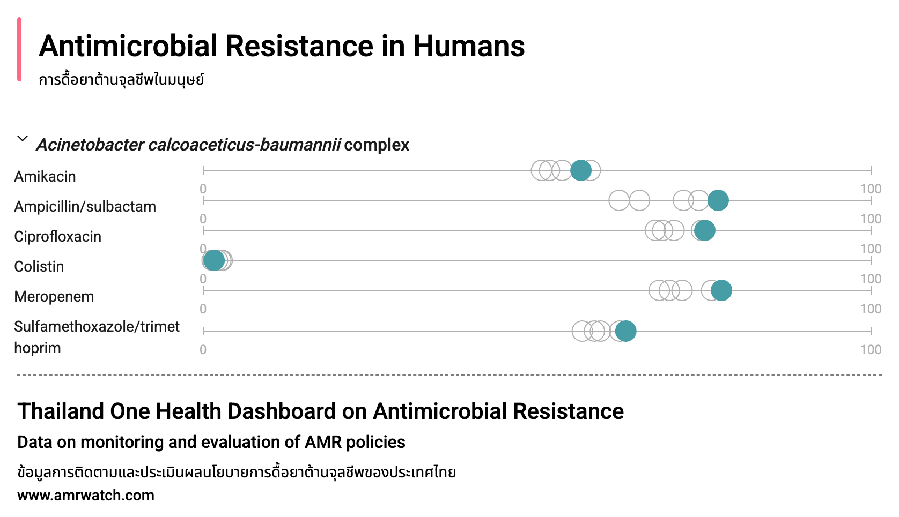
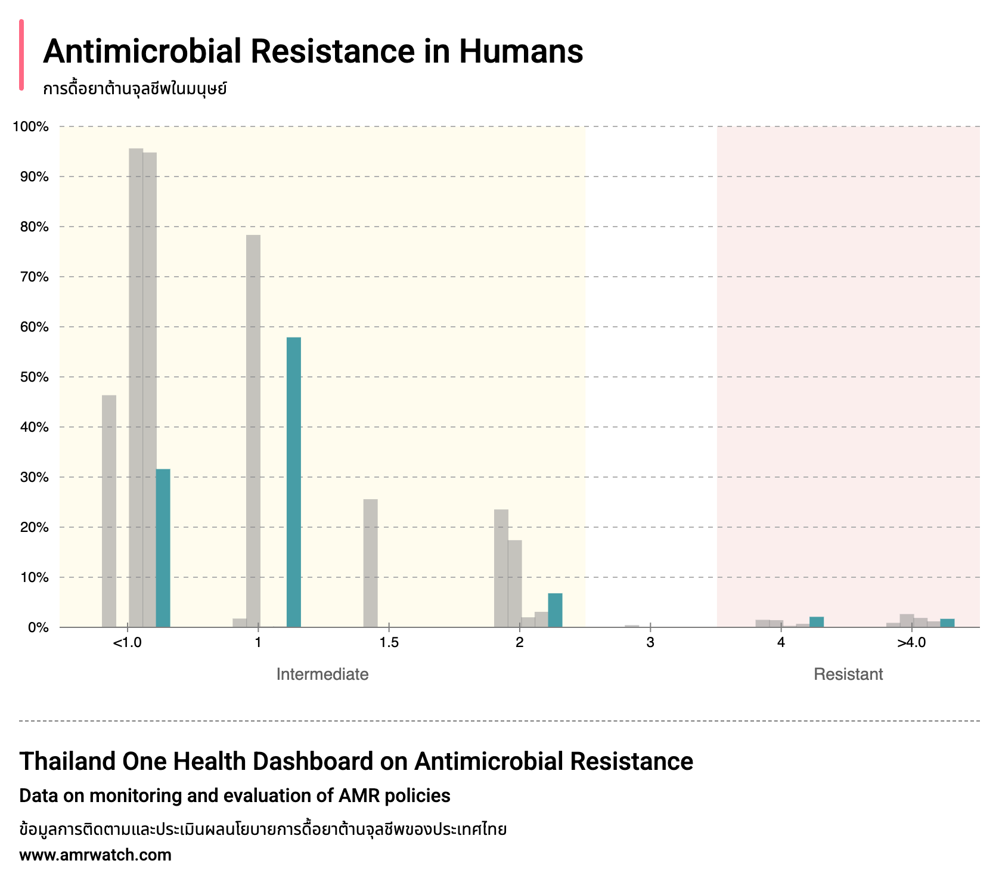
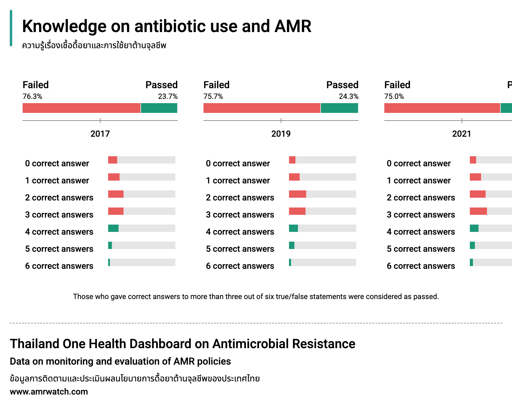
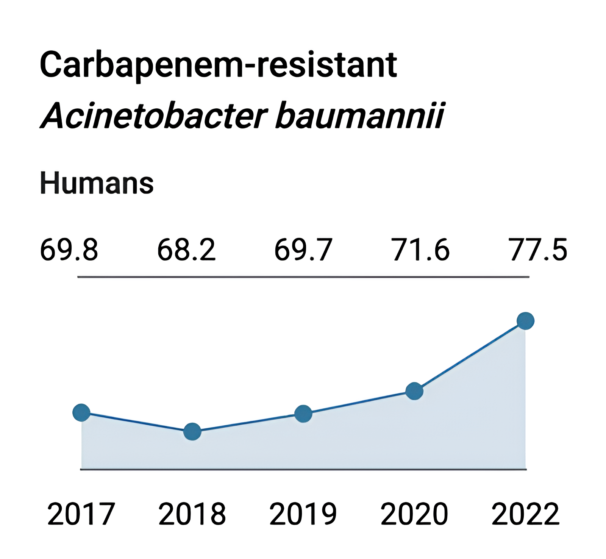

“The first platform turning IHPP’s research into interactive dashboards that highlight antimicrobial use, resistance, and medicine consumption trends in Thailand.”
The International Health Policy Program (IHPP), Thailand is a public research organization that strengthens national healthcare systems by generating reliable evidence for policy-making. For this project, IHPP wanted to make their extensive research on antimicrobial resistance accessible to both policymakers and the public. Partnering with IHPP, my team at Boonmee Lab — where I contributed as UX/UI designer and data visualizer — transformed complex datasets into an academic-grade dashboard.
The result, thaiamrwatch.net, presents information on antimicrobial consumption, resistance patterns, and public awareness. To best communicate the data, we designed a set of tailored visualizations:
Sankey charts to illustrate dosage and annual antimicrobial use, highlighting consumption trends.
Sankey flow illustrating annual antimicrobial usage.
Dot plots to show distributions and comparisons.
Dot plot for distribution and comparison across categories.
Bar charts to display proportions and categorical breakdowns.
Bar chart highlighting proportions by category.
Horizontal Stacked bar Charts to show composition within categories.
Composition comparison via stacked bars.
Diverging bar chart to show composition within categories.
Composition comparison via diverging bar chart.
Line charts to emphasize long-term resistance trends.
Year-over-year resistance trends.
The process began with workshops to understand IHPP’s research and stakeholder needs. We then conducted data characterization, categorizing and restructuring datasets to ensure clarity and usability.
Development presented challenges due to the complexity of the visualizations and the level of detail required. Our team carefully designed data structures to ensure compatibility between available data and the chosen chart types. In addition to dashboards, we created supporting pages for publications and news related to antimicrobial resistance. Still, the highlight of the site remains its dynamic, interactive dashboards, which demanded the most effort to perfect.
Through this project, I gained experience in translating complex datasets into interactive design systems, balancing accuracy with accessibility. The Thai AMR Watch Dashboard stands as a strong example of how data visualization and user-centered design can make critical health research understandable and actionable for broader audiences.